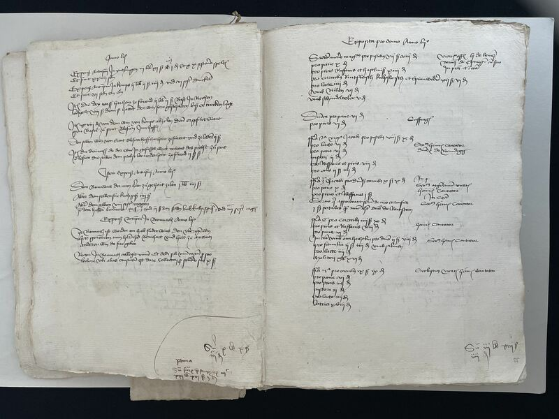

Static archive of a former Omeka site (snapshot 2026-11-24). Search and interactive features are not available.
Skip to main content
Sieben Siegel 2022
Willkommen
Objekte durchstöbern
Reise eines bayerischen Kleinadeligen in das heilige Land
Der unbekannte Pilger
Reisen ist gefährlich
Wie wird wohl die Überfahrt auf dem Meer?
Eine Zweckgemeinschaft für die Fahrt organisiert sich...
Sprache und Verständigung
Bibliografie zur Pilgerreise des Anonymus
Rechnungsbuch der Propstei Saint-Ursanne 1503
Die Propstei Saint-Ursanne im Fürstbistum Basel
Quellen- und Literaturverzeichnis
Lebenslauf Fritz Jacob von Anwil
Testseite Sandro Bizozzero
Siegel Sebastian
Quellenanalyse Fritz Jacobs von Ainweyl
Regionale Salzherren
Namenshäufigkeit Turmbuch
Deutsche Reichstagsakten unter MAXIMILIAN I.
Rechnungsbuch aus Porrentruy und die Einnahme von Hühnern 1469/70
Verwaltung im Fürstbistum Basel und im Amt Puntrut/Porrentruy
Quellenkritik und -analyse: Von der Handschrift zum Digitalisat
Quellenkritik und -analyse mit Fokus auf die Einnahmen von Hühnern
Bibliografie
HLS-Auszug
Unterseite Zuwein
Personenforschung mittels digitaler Tools
Der Umgang mit handschriftlichen Quellen im 21. Jahrhundert
Ein Urteilsbrief als Quelle
Personensuche durch den Namen
Zusammenfassung und Fazit
Bibliografie
Die Bestallung des Doctor Georg Schraub von 1485 als Rat in Mainz
Einleitung
Erzbischof Berthold von Henneberg in Mainz
Georg Schraub - Jurist, Rektor, Rat
Quellenanalyse
Fazit
Bibliographie und Abbildungsverzeichnis
Hofrechnung
Medien
Part of
Handschrift Exposita pro Domo

Titel
Hofrechnung